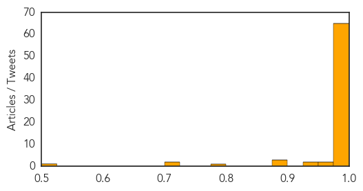
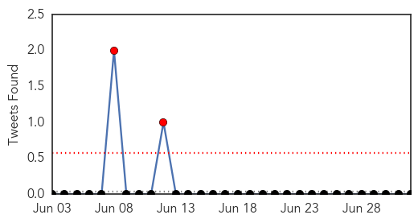

Ebola
30-Day Web Trend
6 alerts, 5 warnings

30-Day Twitter Trend
3 alerts, 0 warnings

Article Locations

Article Confidences
Top Articles:
- 1.000
- Ebola outbreak could become pandemic
- 1.000
- Ebola Outbreak in West Africa Needs Stronger Response
- 1.000
- Ebola Outbreak Relief Work: Resources, stigma posing hurdles
- 1.000
- Ebola toll jumps to 467 as ministers mull response
- 1.000
- West African nations should be prepared for Ebola
- 1.000
- Fear and ignorance as ebola 'out of control' in parts of west Africa
- 1.000
- WHO warns ECOWAS Countries About Ebola -
- 1.000
- Emergency Meeting on Ebola Outbreak -
- 1.000
- UN seeks to calm Ebola fears in W.Africa
- 1.000
- Is Ebola headed our way?
- 1.000
- U.N. Seeks to Calm Ebola Fears in W.Africa — Naharnet
- 1.000
- WHO calls for emergency talks on Ebola outbreak
- 1.000
- DFA raises Alert Level 2 in Guinea, Liberia and Sierra Leone on Ebola outbreak
- 1.000
- Ebola Virus Cases and Deaths Continue to Increase in West Africa
- 1.000
- Ebola virus spreading amid urgent appeals for international help
- 1.000
- Ebola Epidemic is Worst in Recorded History
- 1.000
- 11 Things You Need To Know About The Ebola Epidemic That's Killing Thousands
- 1.000
- WHO Urges West Africa Governments to Agree on Ebola Response
- 1.000
- UN seeks to calm Ebola fears in W. Africa
- 1.000
- Emergency Ministerial Meeting on Ebola opens in Accra, Ghana - Guinea
- 1.000
- WHO calls emergency meeting on Ebola
- 1.000
- Ebola’s Deadly Spread in Africa Driven by Public Health Failures, Cultural Beliefs
- 1.000
- #Ghana hosts crisis talks as #Ebola toll rises
- 1.000
- Liberia: Expatriate medical doctor dies of Ebola
- 1.000
- Challenges Mount for Doctors Fighting Deadly Ebola Outbreak
- 0.999
- INTERVIEW-Experimental Ebola drugs should be tried in Africa, disease expert says
- 0.999
- Ebola toll jumps to 467 as ministers mull response
- 0.999
- Deadliest Ebola outbreak
- 0.999
- Kenya : Fear, suspicion undermine West Africa's battle against Ebola
- 0.999
- UPDATE 2-Fear, cash shortages hinder fight against Ebola outbreak
- 0.999
- Filipinos in west Africa warned vs Ebola
- 0.999
- WHO Disease Outbreak News on Ebola virus disease West Africaupdate
- 0.999
- Ebola outbreak: WHO calls for emergency talks as death toll reaches 467 in West Africa
- 0.999
- UN seeks to calm Ebola fears in W.Africa
- 0.999
- Health Ministers Tasked to Take Pragmatic Measures to Avert Cross Border Transmission of Ebola
- 0.999
- Ebola toll jumps to 467 as ministers mull response
- 0.999
- Sudan Vision Daily
- 0.999
- West African Ebola outbreak is deadliest on record
- 0.999
- Scientist who discovered Ebola: ‘This is unprecedented’ – Amanpour
- 0.998
- Fear, cash shortages hinder fight against Ebola outbreak
- 0.998
- Ebola outbreak: time to try experimental drugs, Jeremy Farrar says
- 0.998
- DFA raises Ebola alert in West African region
- 0.998
- Farsnews
- 0.997
- Red Cross removes staff from Ebola operations after Guinea knife threat
- 0.997
- Death toll at 467 in West Africa, WHO calls for emergency meeting
- 0.997
- Experimental Ebola drugs should be tried in Africa, disease expert says
- 0.997
- Fear, cash shortages hinder fight against Ebola outbreak
- 0.997
- African leaders seek solution to Ebola crisis
- 0.997
- Fear, cash shortages hinder fight against Ebola outbreak
- 0.997
- UPDATE 2-Fear, cash shortages hinder fight against Ebola outbreak
Showing top 50 articles...
Top Tweets:
-
No tweets found for Jul 02, 2014
Swine Flu
30-Day Web Trend
0 alerts, 0 warnings

30-Day Twitter Trend
2 alerts, 0 warnings

Article Locations

Article Confidences

Top Articles:
- 0.999
- Scientist's superflu 'puts millions at risk'
- 0.989
- Scientist recreates H1N1 flu virus RESISTANT to vaccine
- 0.989
- ‘Humdinger’: Swine flu virus which killed half-million modified to 'incurable' — RT News
- 0.961
- Two More Swine Flu Cases Confirmed Among Minor Detainees Infowars Alex Jones' Infowars: There's a war on for your mind!
- 0.954
- How Fox News and Drudge Push The Mexican 'Germ Invasion' Myth
- 0.924
- Seven die of swine flu in Udupi
- 0.887
- At Least Two ‘Border Kids’ Have Swine Flu
- 0.851
- Flu fears fuel immigration wars
- 0.782
- Yoshihiro Kawaokare develops deadly H1N1 flu – but now it can escape the human immune system
Top Tweets:
-
No tweets found for Jul 02, 2014